Πλησιάζουν οι αυτοδιοικητικές εκλογές του 2023 και διάφορα στόματα εκφράζουν μια απόγνωση για την έλλειψη επιλογών που να τα εκφράζουν. Στις πρόσφατες βουλευτικές εκλογές η αξιωματική αντιπολίτευση είχε μεγάλη πτώση, πιθανώς να απογοήτευσε αρκετούς και πλέον αυτοί να μην βρίσκουν κόμματα της αρεσκείας τους από τη γκάμα των διαθέσιμων επιλογών. Η αποχή φαίνεται να αναδεικνύεται σε ισχυρή πολιτική στάση και γι’ αυτό θα τη μελετήσουμε και μαζί της θα μελετήσουμε και τα άκυρα/λευκά ψηφοδέλτια, τα οποία μπορεί να αντανακλούν μια παρόμοια στάση απογοήτευσης με τις εκλογικές επιλογές.
Η πρώτη επιλογή για την άντληση δεδομένων ήταν και η εύκολη, η Wikipedia. Δυστυχώς, ψάχνοντας στα επίσημα στοιχεία του κράτους βρέθηκαν πάρα πολλές αναντιστοιχίες. Επί παραδείγματι στις εκλογές του Ιανουαρίου του 1985 η Wikipedia δίνει ότι οι εγγεγραμμένοι ήταν 9’949’684, ενώ το Υπουργείο Εσωτερικών δίνει 9’900’403. Η Wikipedia, δηλαδή, δίνει 49’281 παραπάνω εγγεγραμμένους, αλλά, όσο μεγάλο και να φαίνεται αυτό το νούμερο, στην πραγματικότητα αυτό αντιστοιχεί στο 0.5% του πραγματικού πλήθους. Πιθανότατα η Wikipedia να άντλησε κάποια δεδομένα και κάποια ποσοστά και ακολούθως να εξήγαγε τα δεδομένα που της έλλειπαν μέσω υπολογισμών με ποσοστά. Οπότε μάλλον αυτή η απόκλιση που βλέπουμε αντικατοπτρίζει σφάλματα στρογγυλοποίησης.
Όπως και να ’χει, παρότι δεν μιλάμε για σοβαρές αναντιστοιχίες, έγινε προσπάθεια να ελαχιστοποιηθεί η Wikipedia ως πηγή στο παρόν άρθρο. Δυστυχώς όμως πολλοί σύνδεσμοι του Υπουργείου Εσωτερικών δεν λειτουργούσαν και για πολλές εκλογές δεν υπήρχαν καθόλου πηγές. Οπότε ο γράφων σε κάποιες περιπτώσεις στράφηκε σε άλλες πηγές, η επωνυμία των οποίων τού παρείχε περισσότερη εμπιστοσύνη για την αξιοπιστία των δεδομένων τους, και στις υπόλοιπες αρκέστηκε στη Wikipedia.
Ακριβώς αυτή η έλλειψη πηγών είναι που έκανε τις αυτοδιοικητικές εκλογές να απουσιάσουν εντελώς από την παρούσα μελέτη. Ο ενδιαφερόμενος αναγνώστης με πρόσβαση σε πηγές των αυτοδιοικητικών εκλογών, μπορεί να εμπλουτίσει το αρχείο με τα δεδομένα και να χρησιμοποιήσει λίγο-πολύ τον κώδικα που θα χρησιμοποιήσουμε, ώστε να κάνει τη δικιά του πληρέστερη μελέτη.
Τα δεδομένα παρατίθενται στον παρακάτω πίνακα και είναι διαθέσιμα στο αρχείο simetoxiN_EU.xlsx, που παρατίθεται κάτωθεν του πίνακα, και να το χρησιμοποιήσει κατά το δοκούν.
| ETOS | MINAS | EPOXI | PSIFISAN | EGGEGRAMMENOI | AKIRA | AKIRA_p | LEFKA | LEFKA_p | AKIRO_LEFKO | AKIRO_LEFKO_p | EIDOS_EKLOGON | PIGI | SYNDESMOI |
|---|---|---|---|---|---|---|---|---|---|---|---|---|---|
| 1977 | NO | F | 5193891 | 6403738 | NA | NA | NA | NA | 64120 | 0.0123453 | bouleftikes | IMER | https://www.imerodromos.gr/ekloges-1974-shmera/ |
| 1981 | OK | F | 5753478 | 7059778 | NA | NA | NA | NA | 82421 | 0.0143254 | bouleftikes | IMER | https://www.imerodromos.gr/ekloges-1974-shmera/ |
| 1981 | OK | F | 5752349 | 7329409 | NA | NA | NA | NA | 74688 | 0.0129839 | EU | WIKI | https://el.wikipedia.org/wiki/%CE%9A%CE%B1%CF%84%CE%B7%CE%B3%CE%BF%CF%81%CE%AF%CE%B1:%CE%95%CE%BB%CE%BB%CE%B7%CE%BD%CE%B9%CE%BA%CE%AD%CF%82_%CE%B2%CE%BF%CF%85%CE%BB%CE%B5%CF%85%CF%84%CE%B9%CE%BA%CE%AD%CF%82_%CE%B5%CE%BA%CE%BB%CE%BF%CE%B3%CE%AD%CF%82 |
| 1984 | IN | K | 6011816 | 7790309 | NA | NA | NA | NA | 55756 | 0.0092744 | EU | WIKI | https://el.wikipedia.org/wiki/%CE%9A%CE%B1%CF%84%CE%B7%CE%B3%CE%BF%CF%81%CE%AF%CE%B1:%CE%95%CE%BB%CE%BB%CE%B7%CE%BD%CE%B9%CE%BA%CE%AD%CF%82_%CE%B2%CE%BF%CF%85%CE%BB%CE%B5%CF%85%CF%84%CE%B9%CE%BA%CE%AD%CF%82_%CE%B5%CE%BA%CE%BB%CE%BF%CE%B3%CE%AD%CF%82 |
| 1985 | IN | K | 6422466 | 8008647 | NA | NA | NA | NA | 57372 | 0.0089330 | bouleftikes | IMER | https://www.imerodromos.gr/ekloges-1974-shmera/ |
| 1989 | IN | K | 6704752 | 8377904 | 104891 | 0.0156443 | 18620 | 0.0027771 | 123511 | 0.0184214 | EU | WIKI | https://el.wikipedia.org/wiki/%CE%9A%CE%B1%CF%84%CE%B7%CE%B3%CE%BF%CF%81%CE%AF%CE%B1:%CE%95%CE%BB%CE%BB%CE%B7%CE%BD%CE%B9%CE%BA%CE%AD%CF%82_%CE%B2%CE%BF%CF%85%CE%BB%CE%B5%CF%85%CF%84%CE%B9%CE%BA%CE%AD%CF%82_%CE%B5%CE%BA%CE%BB%CE%BF%CE%B3%CE%AD%CF%82 |
| 1989 | NO | K | 6669481 | 8379435 | NA | NA | NA | NA | 147918 | 0.0221783 | bouleftikes | IMER | https://www.imerodromos.gr/ekloges-1974-shmera/ |
| 1989 | NO | F | 6798159 | 8637323 | NA | NA | NA | NA | 101675 | 0.0149563 | bouleftikes | IMER | https://www.imerodromos.gr/ekloges-1974-shmera/ |
| 1990 | AR | A | 6698591 | 8453685 | NA | NA | NA | NA | 112551 | 0.0168022 | bouleftikes | IMER | https://www.imerodromos.gr/ekloges-1974-shmera/ |
| 1993 | OK | F | 7019925 | 8861833 | NA | NA | NA | NA | 119614 | 0.0170392 | bouleftikes | IMER | https://www.imerodromos.gr/ekloges-1974-shmera/ |
| 1994 | IN | K | 6803884 | 9550596 | 144126 | 0.0211829 | 127167 | 0.0186904 | 271293 | 0.0398733 | EU | WIKI | https://el.wikipedia.org/wiki/%CE%9A%CE%B1%CF%84%CE%B7%CE%B3%CE%BF%CF%81%CE%AF%CE%B1:%CE%95%CE%BB%CE%BB%CE%B7%CE%BD%CE%B9%CE%BA%CE%AD%CF%82_%CE%B2%CE%BF%CF%85%CE%BB%CE%B5%CF%85%CF%84%CE%B9%CE%BA%CE%AD%CF%82_%CE%B5%CE%BA%CE%BB%CE%BF%CE%B3%CE%AD%CF%82 |
| 1996 | SE | F | 6978656 | 9140742 | NA | NA | NA | NA | 198607 | 0.0284592 | bouleftikes | MOUR | http://www.physics.ntua.gr/mourmouras/agxivasihn/ekloges_1999_2019.html |
| 1999 | IN | K | 6712684 | 9555326 | 150501 | 0.0224204 | 133487 | 0.0198858 | 283988 | 0.0423062 | EU | MOUR | http://www.physics.ntua.gr/mourmouras/agxivasihn/ekloges_1999_2019.html |
| 2000 | AR | A | 7026527 | 9372541 | NA | NA | NA | NA | 158516 | 0.0225597 | bouleftikes | MOUR | http://www.physics.ntua.gr/mourmouras/agxivasihn/ekloges_1999_2019.html |
| 2004 | MR | A | 7573368 | 9899472 | 123713 | 0.0163353 | 43036 | 0.0056825 | 166749 | 0.0220178 | bouleftikes | Y_E | https://ekloges.ypes.gr/ |
| 2004 | IN | K | 6283637 | 9938863 | NA | NA | NA | NA | 161005 | 0.0256229 | EU | MOUR | http://www.physics.ntua.gr/mourmouras/agxivasihn/ekloges_1999_2019.html |
| 2007 | SE | F | 7355026 | 9918917 | 148850 | 0.0202379 | 47170 | 0.0064133 | 196020 | 0.0266512 | bouleftikes | Y_E | https://ekloges.ypes.gr/ |
| 2009 | IN | Κ | 5261749 | 10014795 | 72919 | 0.0138583 | 60934 | 0.0115806 | 133853 | 0.0254389 | EU | Y_E | https://ekloges.ypes.gr/ |
| 2009 | OK | F | 7044606 | 9929065 | 142916 | 0.0202873 | 43269 | 0.0061421 | 186185 | 0.0264294 | bouleftikes | Y_E | https://ekloges.ypes.gr/ |
| 2012 | MA | A | 6476818 | 9945859 | 114769 | 0.0177200 | 37913 | 0.0058536 | 152682 | 0.0235736 | bouleftikes | Y_E | https://ekloges.ypes.gr/ |
| 2012 | IN | K | 6216798 | 9947876 | 35961 | 0.0057845 | 25373 | 0.0040814 | 61334 | 0.0098659 | bouleftikes | Y_E | https://ekloges.ypes.gr/ |
| 2014 | MA | A | 5941636 | 10013834 | 157094 | 0.0264395 | 68557 | 0.0115384 | 225651 | 0.0379779 | EU | Y_E | https://ekloges.ypes.gr/ |
| 2015 | IN | K | 6330356 | 9900403 | 114654 | 0.0181118 | 34830 | 0.0055021 | 149484 | 0.0236138 | bouleftikes | Y_E | https://ekloges.ypes.gr/ |
| 2015 | SE | F | 5567930 | 9913609 | 69884 | 0.0125512 | 64670 | 0.0116147 | 134554 | 0.0241659 | bouleftikes | Y_E | https://ekloges.ypes.gr/ |
| 2019 | MA | A | 5920355 | 10088325 | 173781 | 0.0293531 | 90455 | 0.0152786 | 264236 | 0.0446318 | EU | Y_E | https://ekloges.ypes.gr/ |
| 2019 | IL | K | 5769644 | 9984934 | 77477 | 0.0134284 | 77477 | 0.0134284 | 154954 | 0.0268568 | bouleftikes | Y_E | https://ekloges.ypes.gr/ |
| 2023 | MA | A | 6061040 | 9813595 | 123318 | 0.0203460 | 34959 | 0.0057678 | 158277 | 0.0261138 | bouleftikes | Y_E | https://ekloges.ypes.gr/ |
| 2023 | IN | K | 5273699 | 9813595 | 32219 | 0.0061094 | 26273 | 0.0049819 | 58492 | 0.0110913 | bouleftikes | Y_E | https://ekloges.ypes.gr/ |
Στον παραπάνω πίνακα παρουσιάζεται:
το έτος που έγιναν οι εκλογές (στήλη ETOS),
ο μήνας που έγιναν οι εκλογές (στήλη
MINAS),
το πόσα άτομα ψήφισαν (στήλη PSIFISAN),
το πόσα άτομα ήταν εγγεγραμμένα στους εκλογικούς καταλόγους
(στήλη EGGEGRAMMENOI),
το πόσα ήταν τα άκυρα (στήλη AKIRA) και το ποσοστό
τους (στήλη AKIRA_p),
το πόσα ήταν τα λευκά (στήλη LEFKA) και το ποσοστό
τους (στήλη LEFKA_p),
το πόσα ήταν τα άκυρα μαζί με τα λευκά (στήλη
AKIRO_LEFKO) και το ποσοστό τους
(`AKIRO_LEFKO_p``),
το αν ήταν βουλευτικές εκλογές ή ευρωεκλογές (στήλη
EIDOS_EKLOGON), η πηγή που αντλήθηκαν τα δεδομένα (στήλη
PIGI) και ο αντίστοιχος σύνδεσμος (στήλη
SYNDESMOI).
Φλερτάροντας ο γράφων με τον ευρωσκεπτικιστικό χώρο είχε πάντα την αίσθηση ότι οι ευρωεκλογές αντιμετωπίζονται απαξιωτικά από τους περισσότερους ανθρώπους, έναντι τουλάχιστον των βουλευτικών, όπερ θα αντανακλόταν και στο μέγεθος της αποχής. Είναι όμως έτσι ή απλά έκρινε εξ ιδίων τα αλλότρια; Αυτό θα μελετήσουμε τώρα.
Πώς θα καταφέρουμε να ελέγξουμε αν επιδρά στο μέγεθος της αποχής ο παράγοντας «είδος εκλογών»; Αρχικά θα υποθέσουμε ότι αυτός δεν επιδρά, δηλαδή ότι η αποχή δεν έχει ουσιαστικές διαφορές ανάμεσα στις ευρωεκλογές και τις βουλευτικές εκλογές (μηδενική υπόθεση). Ακολούθως θα εκτελέσουμε τον έλεγχο Kruskal-Wallis, ώστε να δούμε πόσο πιθανό όμως είναι να τύχουμε τέτοιες διαφορές στα ποσοστά αποχής μεταξύ ευρωεκλογών και βουλευτικών εκλογών, δεδομένης αυτής της υπόθεσης που κάναμε. Αν μας βγει ότι τελικά αυτές οι διαφοροποιήσεις είναι εντελώς απίθανο να συμβούν (δηλαδή έχουν πιθανότητα μικρότερη του 5%), σημαίνει ότι δεν μπορούμε να δεχτούμε την υπόθεση ότι ο παράγοντας «είδος εκλογών» δεν επιδρά.
##
## Kruskal-Wallis rank sum test
##
## data: APOXI_p by EIDOS_EKLOGON
## Kruskal-Wallis chi-squared = 0.92015, df = 1, p-value = 0.3374Εκτελώντας τον εν λόγω έλεγχο προκύπτει p-τιμή το 0.3374, δηλαδή μπορούμε να είμαστε 33.74% σίγουροι ότι θα έχουμε τέτοιες διαφοροποιήσεις ανάμεσα στις ευρωεκλογές και στις βουλευτικές εκλογές, ακόμα κι αν ο παράγοντας «είδος εκλογών» δεν έχει καμία επίδραση. Αυτό όμως πολύ παραπάνω από το 5% που θα θέλαμε για να θεωρούμε κάτι πραγματικά σπάνιο, οπότε ο παράγοντας «είδος εκλογών» είναι αθώος μέχρι αποδείξεως του εναντίου.
Τι γίνεται όμως με το λευκό και το άκυρο; Εκεί παίζει ρόλο το είδος των εκλογών;
##
## Kruskal-Wallis rank sum test
##
## data: AKIRA_p by EIDOS_EKLOGON
## Kruskal-Wallis chi-squared = 3.8118, df = 1, p-value = 0.05089Όσον αφορά τα άκυρα, βλέπουμε ότι η p-τιμή είναι 0.7585. Αυτό σημαίνει ότι ούτε τα άκυρα έχουμε ενδείξεις ότι επηρεάζονται από το είδος των εκλογών. Τι γενεται όμως με τα λευκά;
##
## Kruskal-Wallis rank sum test
##
## data: LEFKA_p by EIDOS_EKLOGON
## Kruskal-Wallis chi-squared = 3.0118, df = 1, p-value = 0.08266Στην περίπτωση των λευκών η p-τιμή είναι 0.08149, όπερ ξεφεύγει εμφανώς (αλλά όχι τόσο όσο πριν) από αυτό που θεωρούμε σπάνιο. Ομοίως και ο συνδυασμός άκυρων-λευκών που έχει p-τιμή το 0.1213, όπως βλέπουμε ακολούθως.
##
## Kruskal-Wallis rank sum test
##
## data: AKIRO_LEFKO_p by EIDOS_EKLOGON
## Kruskal-Wallis chi-squared = 2.4011, df = 1, p-value = 0.1213Παραταύτα, αν θέλουμε να είμαστε τυπικοί, η p-τιμή των ακύρων το φράγμα του 5% δεν το ξεπερνάει, οπότε μπορούμε να θεωρήσουμε ότι δεν είναι όσο σπάνια περίπτωση θα θέλαμε. Αυτό και θα υιοθετήσουμε σαν στάση στην παρούσα έρευνα, οπότε δεν θα κάνουμε ξεχωριστή μελέτη στις βουλευτικές εκλογές και στις ευρωεκλογές. Ο αναγνώστης που δεν καλύπτεται από την τυπολατρία του γράφοντος μπορεί να κάνει τη σχετική έρευνα χρησιμοποιώντας τα στοιχεία του κώδικα που έχουν απενεργοποιηθεί.
Μιας και εξετάσαμε την επίδραση ενός παράγοντα, ας εξετάσουμε και την επίδραση ενός άλλου. Στις προηγούμενες εκλογές, τις βουλευτικές του Ιουνίου 2023, ακουγόταν από διάφορα στόματα η ανησυχία ότι πολλοί εργαζόμενοι δεν θα μπορούν να παρευρεθούν στις κάλπες λόγω της εργασίας τους σε άλλα μέρη από τον τόπο καταγωγής τους. Πολλοί νέοι, για παράδειγμα, πηγαίνουν και δουλεύουν για το καλοκαίρι σε διάφορα νησιά, πράγμα που θα τους εμπόδιζε στις εκλογικές τους υποχρεώσεις. Ήταν βάσιμη αυτή η ανησυχία;
Ουσιαστικά ενδιαφερόμαστε περί του αν επιδρά στο μέγεθος της αποχής το γεγονός ότι οι εκλογές τελούνται το καλοκαίρι, το φθινόπωρο, το χειμώνα ή την άνοιξη. Θα το εξετάσουμε κάνοντας πάλι έλεγχο Kruskal-Wallis.
##
## Kruskal-Wallis rank sum test
##
## data: APOXI_p by EPOXI
## Kruskal-Wallis chi-squared = 5.3267, df = 3, p-value = 0.1494Τοιαύτη περιπτώσει βρίσκουμε p-τιμή 0.1494, επομένως δεν έχουμε επαρκή στοιχεία για να καταλογίσουμε ευθύνες στον παράγοντα «εποχή» όσον αφορά το μέγεθος της αποχής. Και αυτός ο παράγοντας είναι αθώος μέχρι αποδείξεως του εναντίου.
Στην ενότητα αυτή θα εξετάσουμε την πορεία στον χρόνο των στάσεων «απέχω», «ρίχνω άκυρο» και «ρίχνω λευκό».
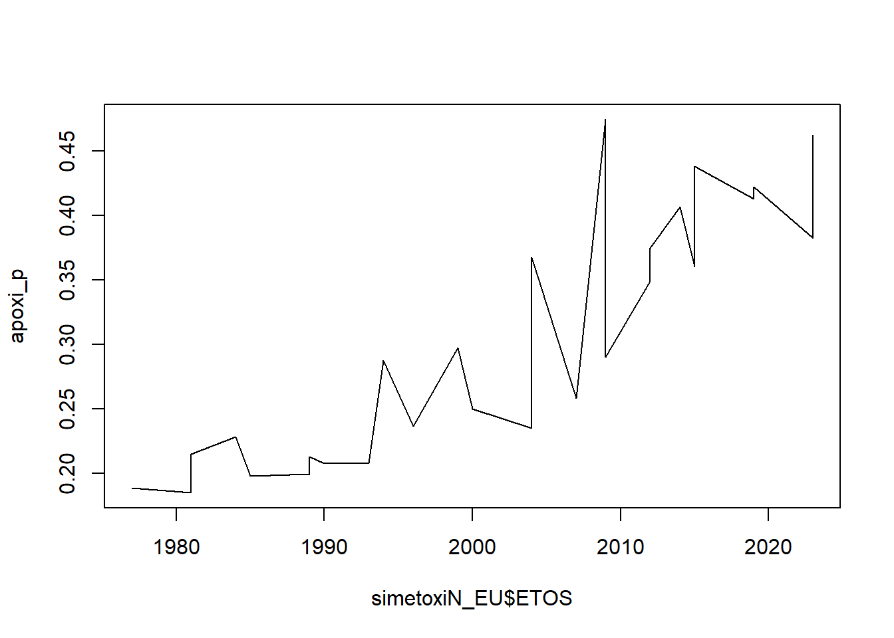
Παρατηρώντας το χρονοδιάγραμμα του ποσοστού της αποχής παρατηρούμε μιαν αυξητική στάση. Αυτό επιβεβαιώνεται και από τον συντελεστή μονοτονικής συσχέτισης Spearman, ο οποίος έχει τιμή 0.900371, όπερ δηλώνει πολύ ισχυρή αυξητική τάση:
Όσον αφορά τα άκυρα και τα λευκά δεν φαίνεται εκ πρώτης όψεως να υπάρχει τέτοια τάση. Οι συντελεστές Spearman δηλώνουν αμελητέα πτωτική τάση (-0.1431744 και -0.0708492). Τα χρονοδιαγράμματά τους επίσης δεν φαίνεται να διαφωνούν με όσα λέμε τώρα.
par( mfrow= c(1,2) )
plot(simetoxiN_EU$ETOS, akira_p, type = "l")
plot(simetoxiN_EU$ETOS, lefka_p, type = "l")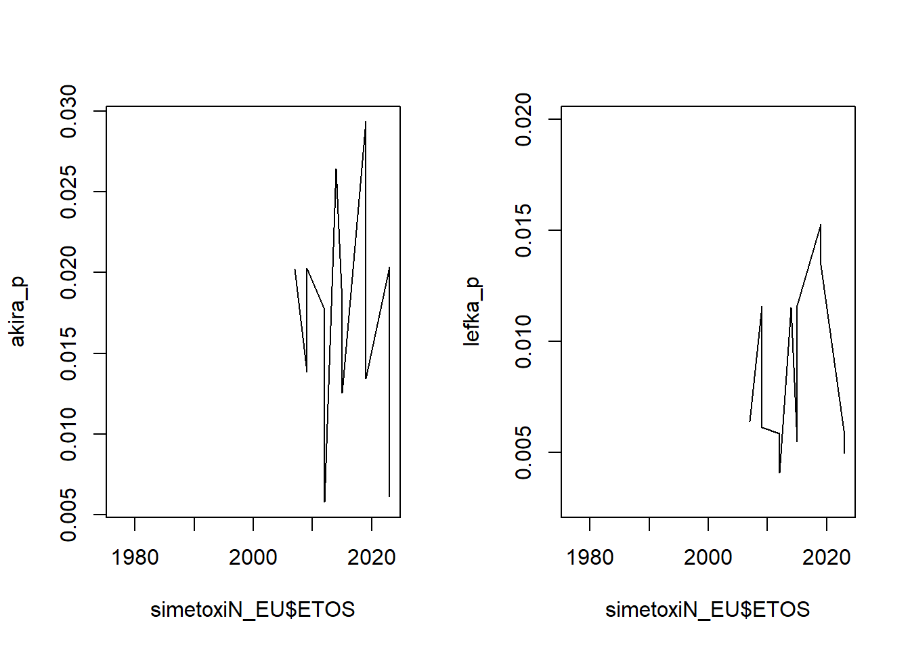
Στην πραγματικότητα όμως τα δεδομένα μας είναι πολύ φτωχά όσον αφορά τα άκυρα και τα λευκά. Οι περισσότερες πηγές τα παρουσίαζαν μαζί και λίγες μόνο έδιναν πόσο ήταν το κάθε ένα ξεχωριστά.
Έτσι, μελετώντας την περίπτωση των άκυρων και των λευκών μαζί έχουμε συντελεστή Spearman 0.5045915, κάτι που υποδηλώνει ισχυρή αυξητική τάση. Αυτό με λίγη προσοχή φαίνεται να επιβεβαιώνεται και από το χρονοδιάγραμμα.
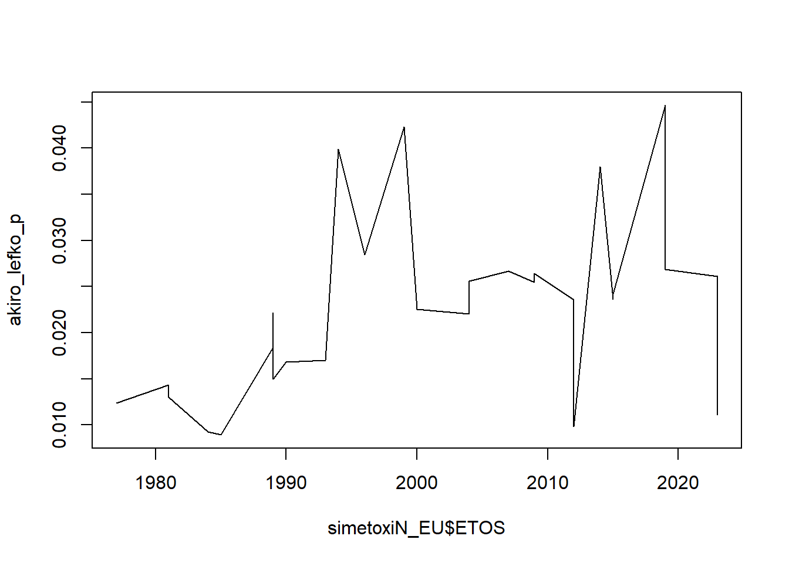
Είδαμε προηγουμένως ότι τόσο η αποχή, όσο και τα άκυρα/λευκά ακολουθούν μιαν αυξητική τάση. Μήπως αυτό σημαίνει ότι σχετίζονται μεταξύ τους; Δεν μιλάμε για συσχέτιση αιτίου-αιτιατού, αλλά για κοινή αντανάκλαση μιας κοινωνικής τάσης. Μήπως, δηλαδή, οι κοινές αυξητικές στάσεις υποδηλώνουν την ύπαρξη μιας κατάστασης απαξίωσης των πολιτικών κομμάτων στην Ελλάδα; Αυτό θα εξετάσουμε τώρα.
Κάνοντας το διάγραμμα διασποράς ακύρων-αποχής μαζί με την ευθεία γραμμικής παλινδρόμησης παρατηρούμε ότι όσο μεγαλώνει η αποχή, τόσο λιγοστεύουν τα άκυρα.
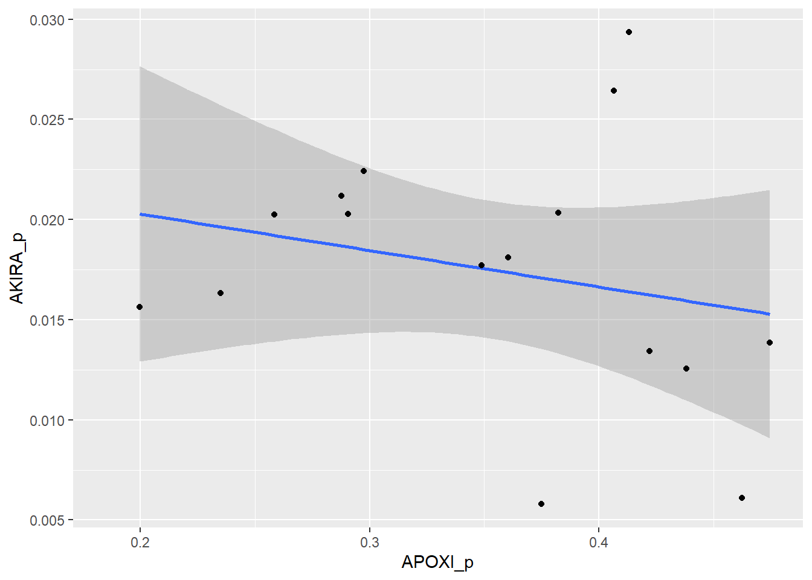
Η δε ευθεία γραμμικής παλινδρόμησης φαίνεται να περιγράφει σχετικά καλά τα δεδομένα μας, αφού το τυπικό σφάλμα εκτίμησης προέκυψε 0.006401.
##
## Call:
## lm(formula = akira_p ~ apoxi_p)
##
## Residuals:
## Min 1Q Median 3Q Max
## -0.0113083 -0.0033265 0.0004527 0.0027212 0.0129530
##
## Coefficients:
## Estimate Std. Error t value Pr(>|t|)
## (Intercept) 0.023913 0.007179 3.331 0.00495 **
## apoxi_p -0.018186 0.019808 -0.918 0.37412
## ---
## Signif. codes: 0 '***' 0.001 '**' 0.01 '*' 0.05 '.' 0.1 ' ' 1
##
## Residual standard error: 0.006401 on 14 degrees of freedom
## (12 observations deleted due to missingness)
## Multiple R-squared: 0.05679, Adjusted R-squared: -0.01059
## F-statistic: 0.8429 on 1 and 14 DF, p-value: 0.3741Αυτό σημαίνει ότι σχεδόν όλα τα πραγματικά ποσοστά των άκυρων διαφέρουν από τα προβλεπόμενα της ευθείας γραμμικής παλινδρόμησης κατά ±3·0.6401=±1.9203 ποσοστιαίες μονάδες.
Από την άλλη ο συντελεστής Pearson υποδηλώνει ασθενή γραμμική συσχέτιση, αφού είναι -0.2383006. Και πάλι όμως δείχνει μια πτωτική τάση, κάτι που επιβεβαιώνει και ο συντελεστής μονοτονικής συσχέτισης Spearman (-0.2852941). Μήπως αυτό σημαίνει ότι οι απογοητευμένοι από τα πολιτικά κόμματα αποτελούν μια σταθερή λίγο-πολύ «δεξαμενή», όπου ένα μέρος της επιλέγει το άκυρο κι ένα άλλο μέρος της επιλέγει την αποχή; Αυτό θα σήμαινε ότι αν μεγαλώσει το ένα μέρος, τότε θα μικρύνει το άλλο, κι έτσι θα ερμηνευόταν αυτό που παρατηρούμε.
Συσχετίζοντας τα λευκά με την αποχή παρατηρούμε μια σχεδόν ανεπαίσθητη αυξητική τάση. Η ευθεία γραμμικής παλινδρόμησης δείχνει ότι όσο η αποχή αυξάνεται, τόσο αυξάνεται και το ποσοστό των λευκών (τυπικό σφάλμα εκτίμησης 0.00543).
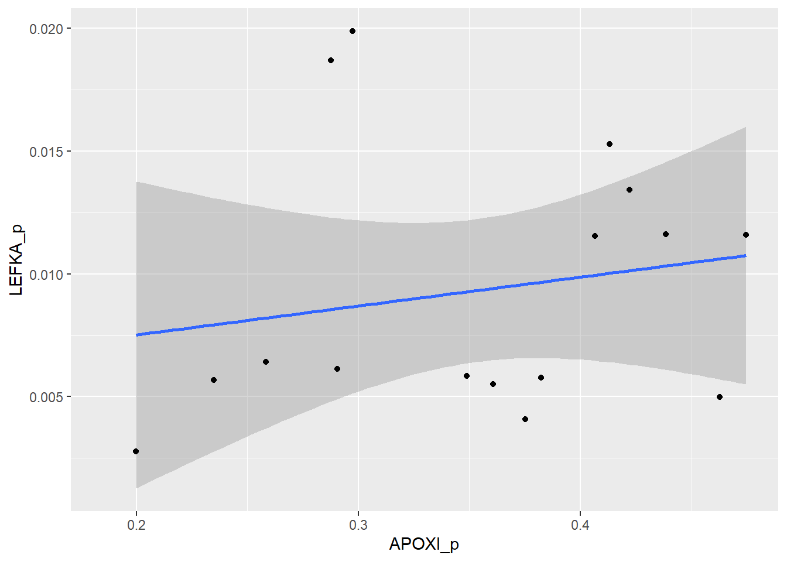
##
## Call:
## lm(formula = lefka_p ~ apoxi_p)
##
## Residuals:
## Min 1Q Median 3Q Max
## -0.005630 -0.003903 -0.002024 0.002011 0.011217
##
## Coefficients:
## Estimate Std. Error t value Pr(>|t|)
## (Intercept) 0.005169 0.006090 0.849 0.410
## apoxi_p 0.011767 0.016803 0.700 0.495
##
## Residual standard error: 0.00543 on 14 degrees of freedom
## (12 observations deleted due to missingness)
## Multiple R-squared: 0.03385, Adjusted R-squared: -0.03517
## F-statistic: 0.4904 on 1 and 14 DF, p-value: 0.4952Η αλήθεια είναι όμως πως ο συντελεστής Pearson (0.1839712) δείχνει ακόμα ασθενέστερη γραμμική συσχέτιση σε σύγκριση με αυτή που είδαμε στην περίπτωση ακύρου-αποχής. Όμως, τόσο αυτός, όσο και ο συντελεστής Speaman (0.2147059) επιβεβαιώνουν την ύπαρξη ασθενούς έστω αυξητικής τάσης.
Έτσι, όσον αφορά τα λευκά-αποχή η θεωρία της «δεξαμενής» δεν φαίνεται να ισχύει. Εδώ φαίνεται να ισχύει η θεωρία που τα θέλει να αντικατοπτρίζουν μια κοινή απογοήτευση της κοινωνίας. Ίσως μια αύξηση/μείωση της κοινωνικής απογοήτευσης με τα πολιτικά κόμματα να επιφέρει και μιαν αύξηση/μείωση της απαξίωσης της εκλογικής διαδικασίας. Όπου αυτή η αύξηση/μείωση της απαξίωσης της εκλογικής διαδικασίας αντανακλάται:
στην αύξηση/μείωση της απαξίωσης της εκλογικής διαδικασίας με τον «συστιμικό» τρόπο (λευκό),
στην αύξηση/μείωση της απαξίωσης της εκλογικής διαδικασίας με τον «αντισυστιμικό» τρόπο (αποχή).
Θεωρώντας τα άκυρα και τα λευκά ως μία επιλογή (αν και ίσως να μην είναι) βλέπουμε και πάλι μιαν αυξητική τάση τους, όσο μεγαλώνει και η αποχή.
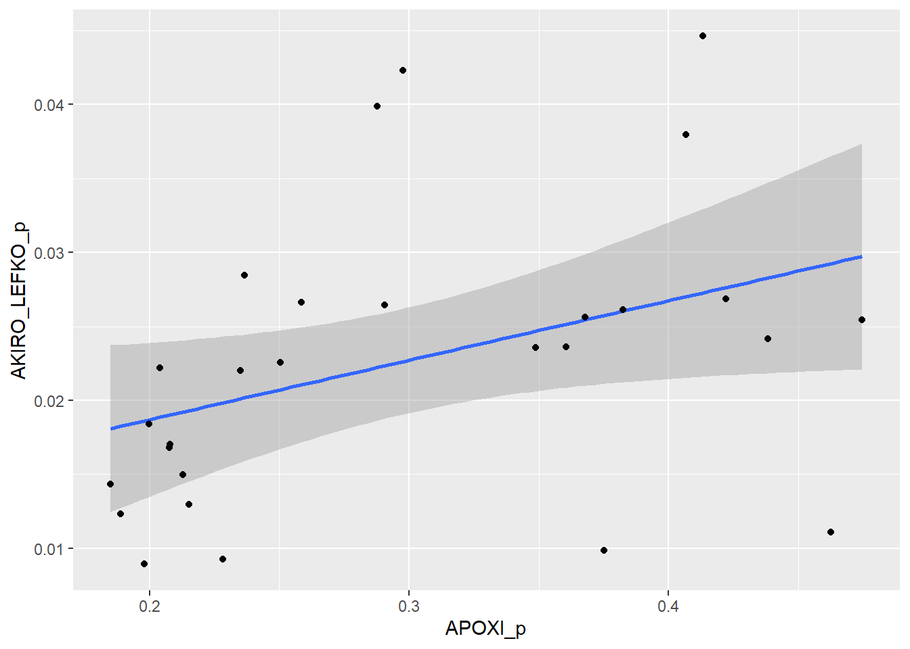
##
## Call:
## lm(formula = akiro_lefko_p ~ apoxi_p)
##
## Residuals:
## Min 1Q Median 3Q Max
## -0.0181719 -0.0042772 -0.0009465 0.0035050 0.0196823
##
## Coefficients:
## Estimate Std. Error t value Pr(>|t|)
## (Intercept) 0.010662 0.005832 1.828 0.0790 .
## apoxi_p 0.040209 0.018656 2.155 0.0406 *
## ---
## Signif. codes: 0 '***' 0.001 '**' 0.01 '*' 0.05 '.' 0.1 ' ' 1
##
## Residual standard error: 0.009197 on 26 degrees of freedom
## Multiple R-squared: 0.1516, Adjusted R-squared: 0.119
## F-statistic: 4.645 on 1 and 26 DF, p-value: 0.04057Στην περίπτωση αυτή ο συντελεστής Pearson (0.3893421) δίνει μεγαλύτερη γραμμική συσχέτιση από αυτή που βλέπαμε προηγουμένως. Πλέον αυτή είναι μέτρια προς ισχυρή. Ο δε Spearman (0.5101259) αναφέρει την ύπαρξη ισχυρής αυξητικής τάσης.
Τέλος, μας μένει η συσχέτιση ακύρων και λευκών.
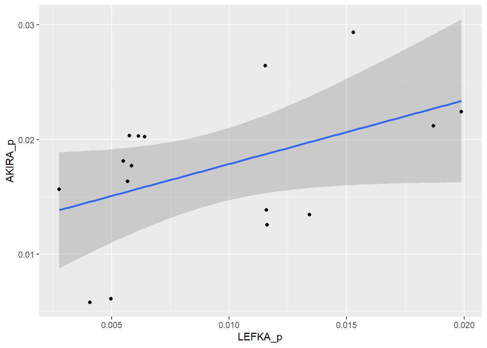
##
## Call:
## lm(formula = lefka_p ~ akira_p)
##
## Residuals:
## Min 1Q Median 3Q Max
## -0.0058280 -0.0040081 -0.0009782 0.0038101 0.0086310
##
## Coefficients:
## Estimate Std. Error t value Pr(>|t|)
## (Intercept) 0.002488 0.003674 0.677 0.5093
## akira_p 0.391028 0.198130 1.974 0.0685 .
## ---
## Signif. codes: 0 '***' 0.001 '**' 0.01 '*' 0.05 '.' 0.1 ' ' 1
##
## Residual standard error: 0.004886 on 14 degrees of freedom
## (12 observations deleted due to missingness)
## Multiple R-squared: 0.2177, Adjusted R-squared: 0.1618
## F-statistic: 3.895 on 1 and 14 DF, p-value: 0.0685Ο συντελεστής Pearson (0.4665415) υποδηλώνει μιαν ισχυρή γραμμική συσχέτιση μεταξύ των ακύρων και των λευκών. Ο Spearman (0.5029412) αναφέρει κι αυτός την ισχυρή αυξητική τάση που βλέπουμε και από το διάγραμμα διασποράς.
Τελικά η αρνητική συσχέτιση ακύρων αποχής φαντάζει μια παραφωνία μετά απ’ όλη αυτή τη συζήτηση. Θα μπορούσε κάποιος να την αγνοήσει και να την ανάγει στα σφάλματα λόγω του περιορισμένου αριθμού δεδομένων. Αυτό είναι μια δουλειά που μπορεί να συνεχίσει ο αναγνώστης. Εμείς την παρούσα ενότητα την τερματίζουμε εδώ.
Στην ενότητα αυτή θα εξετάσουμε το ποσοστό της αποχής-ακύρων-λευκών σε σχέση με τη μεταβολή του πληθυσμού.
Αντλήσαμε δεδομένα από τη σελίδα The World Bank για τον πληθυσμό της Ελλάδας στα έτη των εκλογών. Προφανώς τις ημέρες των εκλογών ο πληθυσμός δεν θα ήταν ακριβώς αυτός που μας δίνεται, αλλά ας χαρίσουμε στον εαυτό μας λίγη μικρή ανακρίβεια ελλείψει καλύτερων στοιχείων.
Στο παρακάτω διάγραμμα διασποράς ο οριζόντιος άξονας απεικονίζει τη μεταβολή του ελληνικού πληθυσμού από τη μία εκλογική περίοδο στην άλλη. Είναι ιδιαίτερα ενδιαφέρον το ότι είναι τόσο εμφανής η πτωτική τάση της αποχής. Όσο μεγαλύτερη αύξηση πληθυσμού έχουμε, τόσο μικραίνει η αποχή.
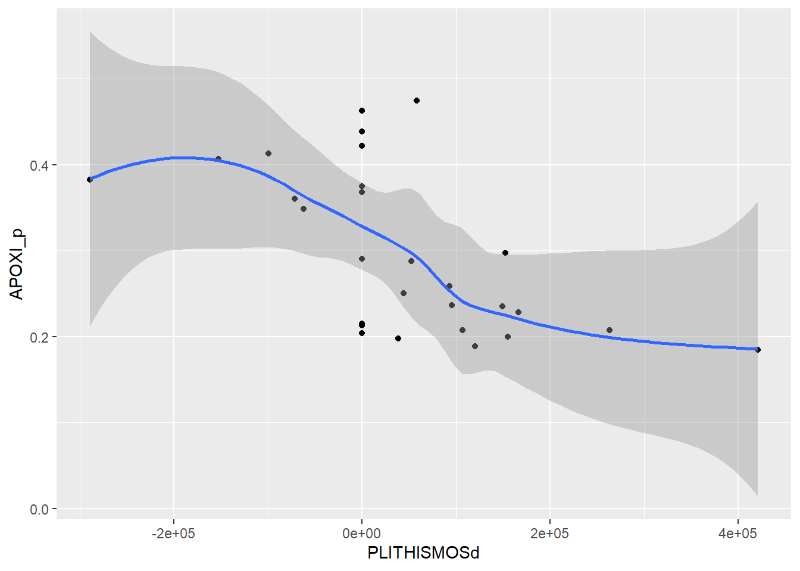
O συντελεστής Spearman (-0.6038682) επιβεβαιώνει την ύπαρξη ισχυρής πτωτικής τάσης.
Έχει ακόμα περισσότερο ενδιαφέρον να παρατηρήσουμε ότι όταν έχουμε αρνητική μεταβολή του πληθυσμού η αποχή είναι μεγαλύτερη από όταν έχουμε θετική μεταβολή του πληθυσμού. Δηλαδή όταν αυτός μειώνεται, η αποχή είναι μεγαλύτερη από όταν αυτός αυξάνεται. Την οπτική αυτή διαπίστωση την επιβεβαιώνει κι ο έλεγχος Kruskal-Wallis, ο οποίος εξάγει p-τιμή 0.04448.
##
## Kruskal-Wallis rank sum test
##
## data: APOXI_p by THETIKI_METABOLI
## Kruskal-Wallis chi-squared = 4.0381, df = 1, p-value = 0.04448Αυτό σημαίνει ότι αν ο παράγοντας «αύξηση ή μείωση πληθυσμού» δεν επιδρούσε στο μέγεθος της αποχής, τότε το να τύχουμε αυτά τα αποτελέσματα που βλέπουμε θα ήταν κάτι εντελώς απίθανο (0.45% πιθανό).
Έτσι όπως φαίνεται, η αποχή πρέπει να είναι η εκδήλωση ενός παράγοντα που συνεπιφέρει και τη μείωση του πληθυσμού. Θα μπορούσαμε να πούμε ότι π.χ. η απογοήτευση για την κοινωνία και τις προοπτικές της, η οποία εκδηλώνεται και μέσω της αποχής από τις εκλογικές επιλογές, οδηγεί σε μείωση/αναβολή «ανοιγμάτων» όπως το να κάνουμε παιδιά; Πολύ πιθανόν.
Ίσως και αυτή η παραπάνω εξήγηση να ερμηνεύει το γιατί τα άκυρα έχουν μια μικρότερη πτωτική πορεία (συντελεστής Spearman -0.2537596), ενώ τα λευκά μια ανοδική (συντελεστής Spearman 0.0208979), όσο μεγαλώνει η μεταβολή του πληθυσμού. Το λευκό σαν επιλογή δεν απορρίπτει τη διαδικασία, απλά εκφράζει την προσωρινή έλλειψη επιλογής. Είναι αυτό που λέμε «η συστημική εναντίωση στα πράγματα». Οπότε είναι λογικό, όσο τα πράγματα φαίνεται να μην έχουν λύση, τότε να απορρίπτεται όλο το οικοδόμημα και μαζί του και η συστημική αντίδραση του λευκού. Το άκυρο εκφράζει μιαν αγανάκτηση παραπάνω από το λευκό, αλλά όχι την έντονη απαξίωση της αποχής, ίσως και γι’ αυτό να έχει λιγότερο έντονη πτωτική τάση.
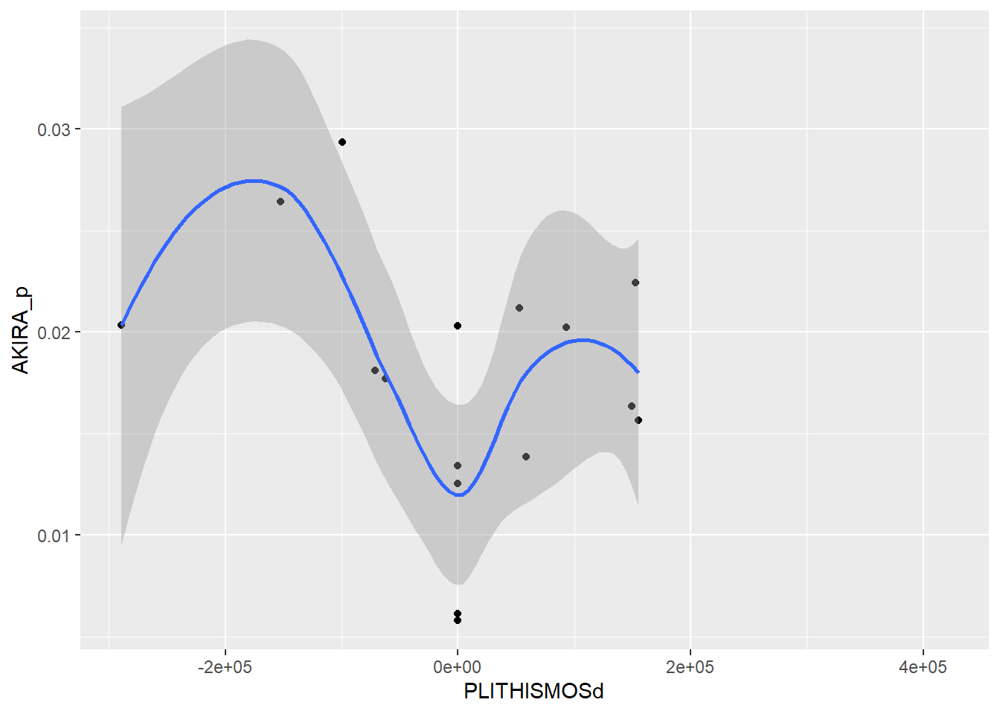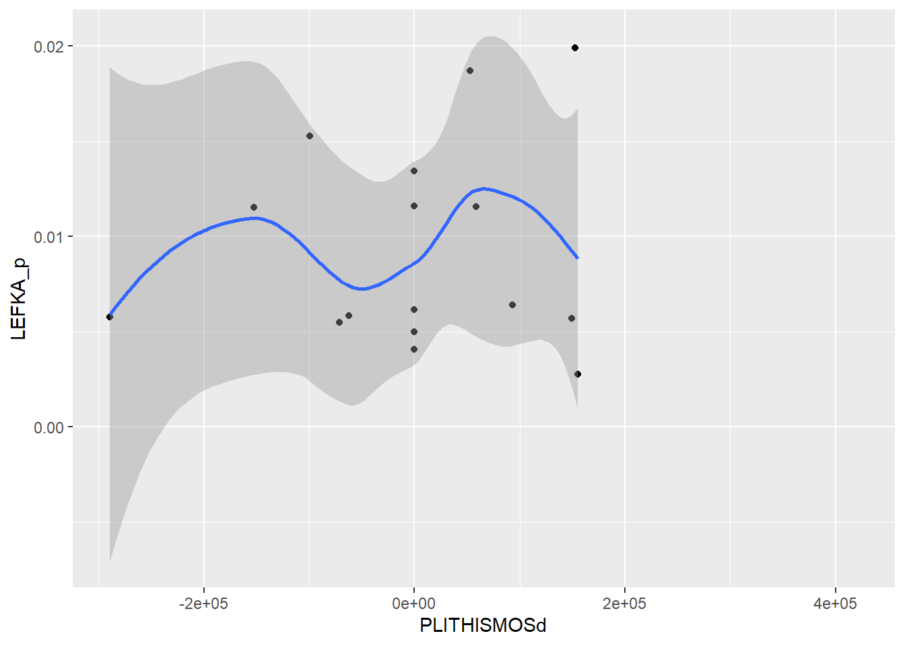
Προς επίρρωση των παραπάνω εκτελούμε επίσης ελέγχους Kruskal-Wallis, για να δούμε κατά πόσον ο παράγοντας «άυξηση-μείωση πληθυσμού» έχει αντίκτυπο στο ποσοστό των ακύρων και των λευκών.
##
## Kruskal-Wallis rank sum test
##
## data: AKIRA_p by THETIKI_METABOLI
## Kruskal-Wallis chi-squared = 3.9305, df = 1, p-value = 0.04742##
## Kruskal-Wallis rank sum test
##
## data: LEFKA_p by THETIKI_METABOLI
## Kruskal-Wallis chi-squared = 0.028877, df = 1, p-value = 0.8651Η μικρή p-τιμή του πρώτου ελέγχου (0.04742) δείχνει ότι είναι απίθανο να μην επιδρά ο παράγοντας στο ποσοστο των ακύρων. Από την άλλη δεν φαίνεται να έχουμε ενδείξεις ότι κάτι τέτοιο συμβαίνει και με τα λευκά (p-τιμή 0.8651).
Συνυπολογίζοντας τα άκυρα και τα λευκά, ώστε να έχουμε διαθέσιμα περισσότερα δεδομένα, βλέπουμε και πάλι μια πτωτική τάση. Όχι τόσο έντονη όσο της αποχής (συντελεστής Spearman -0.2977599 -0.2977599), ασθενής θα λέγαμε ότι είναι, αλλά πάντως υπαρκτή.
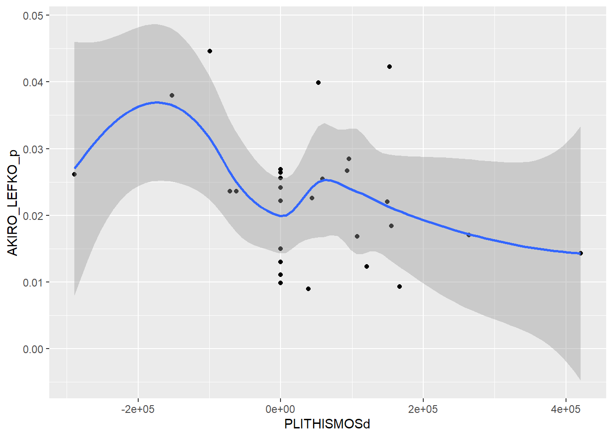
Από την άλλη έλεγχος Kruskal-Wallis (p-τιμή 0.05882) δεν επιβεβαιώνει περίτρανα ότι η μείωση πληθυσμού συνδέεται με το μέγεθος της αποχής. Αλλά αυτό κρίνεται και από το αν ο αναγνώστης θεωρεί πως το 5.882% έχει ουσιαστική διαφορά από το 5%.
##
## Kruskal-Wallis rank sum test
##
## data: AKIRO_LEFKO_p by THETIKI_METABOLI
## Kruskal-Wallis chi-squared = 3.5703, df = 1, p-value = 0.05882Πού οδηγείται η κατάσταση; Ποια θα είναι η αποχή στις επόμενες εκλογικές αναμετρήσεις; Θα κάνουμε μιαν απόπειρα να προβλέψουμε τι μέλλει γενέσθαι χρησιμοποιώντας μοντέλα ARIMA.
Στον κάτωθι πίνακα βλέπουμε το πού περιμένουμε να κυμαίνονται τα ποσοστά της αποχής, των ακύρων και των λευκών στις πέντε επόμενες εκλογικές αναμετρήσεις.
## ΑΠΟΧΗ ΑΚΥΡΟ ΛΕΥΚΟ
## 1 [35.2%, 50.3%] [1.7%, 3.8%] [0%, 1.5%]
## 2 [38.7%, 54.9%] [0.4%, 2.6%] [0%, 1.9%]
## 3 [37.5%, 57.5%] [1.1%, 3.5%] [0%, 1.9%]
## 4 [38%, 60.1%] [0.6%, 3.1%] [0.1%, 2.1%]
## 5 [38.7%, 63.6%] [0.9%, 3.4%] [0.1%, 2.1%]Τα διαστήματα σχηματίστηκαν με τρόπο που να μπορούμε να είμαστε κατά 80% βέβαιοι ότι θα πέσουμε μέσα. Αν ο βαθμός αυτός βεβαιότητας δεν μας αρκεί, θα πρέπει να διευρύνουμε κι άλλο τα διαστήματα, ώστε να γίνει πιθανότερο να πέσουν μέσα οι προβλέψεις μας. Ο ενδιαφερόμενος αναγνώστης μπορεί να επεξεργαστεί τον κώδικα, ώστε να αυξήσει τη βεβαιότητά του και να την φτάσει στο 95%.
Στο σημείο αυτό τελειώνει η έρευνά μας. Αυτό, φυσικά, δεν σημαίνει ότι εξαντλήσαμε το ζήτημα. Το αντίθετο. Απλά κάναμε μιαν αρχή. Υπάρχουν πολλά που θα μπορούσαν να εξεταστούν επίσης. Για παράδειγμα:
Εξαρτάται το μέγεθος της αποχής από το πιο κόμμα κυβέρνησε προηγουμένως;
Επηρεάστηκε το μέγεθος της αποχής από ένα δραματικό γεγονός που συνέβη, όπως ένα σιδηροδρομικό δυστύχημα ή μια πλημμύρα;
Η αστικοποίηση του πληθυσμού, η μετανάστευσή του μακριά από τον τόπο που ψηφίζει σχετίζεται με το μέγεθος της αποχής;
Η αύξηση της αποχής δηλώνει απαξίωση της εκλογικής διαδικασίας ή μήπως αντανακλά την παρακμή του ελληνικού κράτους, το οποίο δεν ενημερώνει τους εκλογικούς καταλόγους, με αποτέλεσμα να είναι εγγεγραμμένοι σε αυτούς ακόμα και οι πεθαμένοι, οπότε να φαίνεται ότι απέχουν;
Το τελευταίο αξίζει να το μελετήσουμε λίγο παραπάνω, ώστε να στρώσουμε το δρόμο για μια νέα μελέτη.
Σχεδιάζοντας το χρονοδιάγραμμα των εγγεγραμμένων στους εκλογικούς καταλόγους βλέπουμε την ύπαρξη μιας έντονα αυξητικής τάσης, η οποία επιβεβαιώνεται και από τον συντελεστή μονοτονικής συσχέτισης Spearman (0.855264). Αυτό θα έλεγε κανείς ότι αντιφάσκει με το γεγονός ότι ο πληθυσμός της Ελλάδας φθίνει σε βαθμό που να αντιμετωπίζουμε δημογραφικό πρόβλημα.
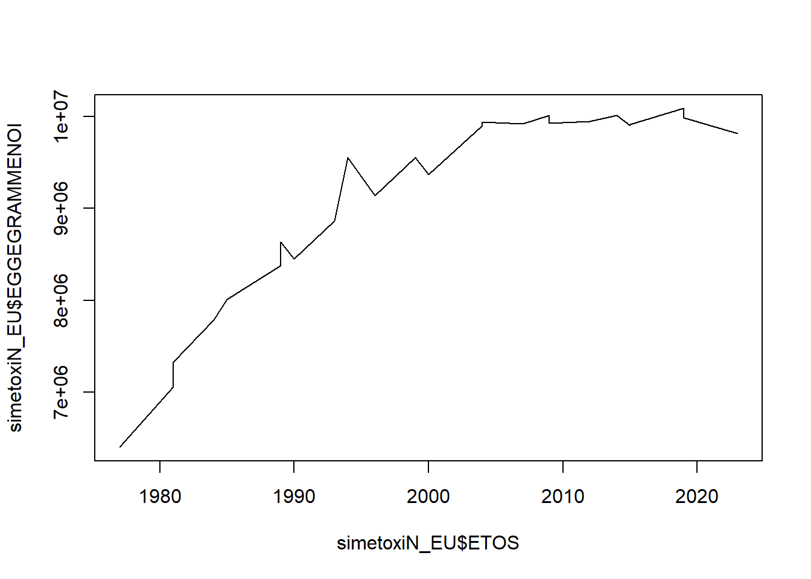
Μήπως τελικά η αυξανόμενη αποχή αντανακλά όντως την νωθρότητα του ελληνικού κράτους; Για να απαντήσουμε αυτό το ερώτημα θα πρέπει να συγκρίνουμε τον αριθμό των εγγεγραμμένων στους εκλογικούς καταλόγους με τον αντίστοιχο πληθυσμό της Ελλάδας εκείνη τη χρονική περίοδο.
Αντιπαραβάλλοντας το χρονοδιάγραμμα εξέλιξης του ελληνικού πληθυσμού στο χρονοδιάγραμμα των εγγεγραμμένων στους εκλογικούς καταλόγους, βλέπουμε μια παρόμοια μορφής καμπύλες. Αρχίζει, λοιπόν, να υποχωρεί η αίσθηση παραδοξότητας.
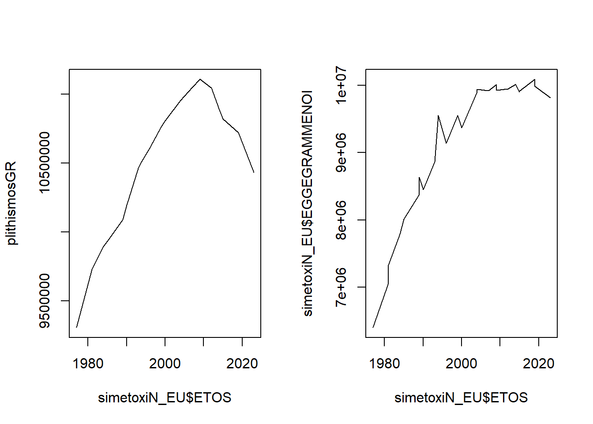
Κάνοντας επίσης γράφημα διασποράς του πληθυσμού της Ελλάδας σε σχέση με τους εγγεγραμμένους στους εκλογικούς καταλόγους βλέπουμε ότι αυτό είναι σχεδόν ευθεία γραμμή. Η πολύ ισχυρή γραμμική συσχέτισή τους επιβεβαιώνεται και από τον συντελεστή γραμμικής συσχέτισης Pearson , ο οποίος έχει τη μεγάλη τιμή 0.9413894.
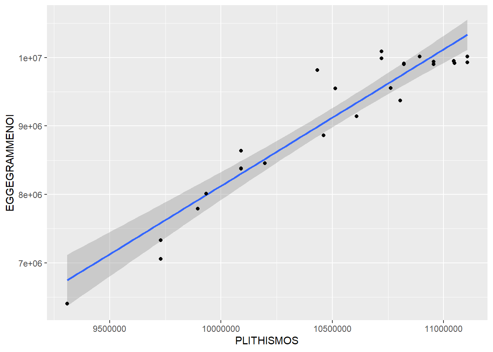
Συγκεκριμένα βρίσκουμε ότι:
[εγγεγραμμένοι] = 1.995·[πληθυσμός]-11’820’000
##
## Call:
## lm(formula = simetoxiN_EU$EGGEGRAMMENOI ~ plithismosGR)
##
## Coefficients:
## (Intercept) plithismosGR
## -1.182e+07 1.995e+00Ας το μελετήσουμε όμως άλλο λίγο. Αρχικά θα θεωρήσουμε ότι οι εγγεγραμμένοι στους εκλογικούς καταλόγους είναι οι Έλληνες ενήλικες.
Κάνοντας το χρονογράφημα του ποσοστού των ενηλίκων μαζί με την καμπύλη τοπικής παλινδρόμησης βλέπουμε ότι αυτό αυξάνεται στην πάροδο του χρόνου. Αυτό εναρμονίζεται με όσα γνωρίζουμε για την γήρανση του πληθυσμού, όσο υπάρχει υπογεννητικότητα.
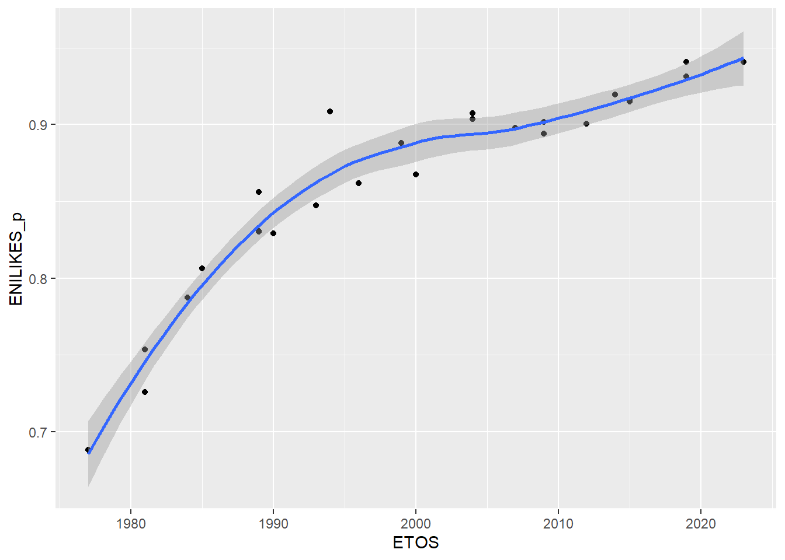
Δεν φαίνεται να υπάρχει κάποιο πρόβλημα με τα δεδομένα μας λοιπόν. Μια σοβαρή όμως ανάλυση θα απαιτούσε να συνεξετάσουμε την αρχική ηλικιακή κατανομή του πληθυσμού της Χώρας, την παιδική θνησιμότητα, το προσδόκιμο ζωής κ.τ.λ. Αυτά όμως ξεφεύγουν από τη θεματολογία αυτού του άρθρου και αποτελούν αντικείμενο μιας άλλης μελλοντικής έρευνας.